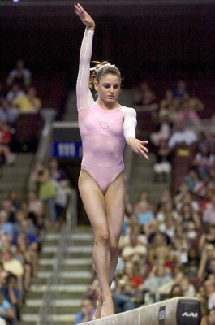

Shayla Worley (USA)
2006 American Cup AA Silver Medalist
2007 World Championships Team Gold Medalist

Medal Total
World Championships: 1 Gold
Shayla was born on September 2, 1990. Her older sister, Jolene, was a gymnast and Shayla wanted to be just like her. She trained at Orlando Metro Gymnastics with coaches Jeff Wood and Christi Barineau. A top prospect for the 2008 Olympic team, Shayla broke her leg during the final training camp in Texas and traveled to Beijing as a spectator. Highly recruited by many colleges, she signed with the University of Georgia and joined the Bulldogs in 2009.
Competition
Results
2003
Jr. American Classic: 15th AA
Jr. USA Championships: 4th AA
Jr. US Classic: 7th AA
2004
Jr. American Classic: 4th AA
Jr. Pacific Alliance Championships: 4th AA
Jr. USA Championships: 2nd AA
Jr. US Classic: 3rd AA
Jr. USA-CAN Dual Meet: 1st Team, 1st AA
Jr. USA-JPN Dual Meet: 1st Team, 12th AA
2005
Intl. Team Challenge (USA-CAN-MEX): 1st Team
Jr. USA Championships: 3rd AA
Jr. US Classic: 4th AA
Massilia Gym Cup: 2nd Team, 29th AA, 2nd UB
2006
American Cup: 2nd AA
Pacific Alliance Championships: 1st Team, 2nd UB
2007
GBR-USA Dual Meet: 1st Team, 2nd AA, 1st UB
US Championships: 2nd AA, 2nd UB, 4th B, 4th FX
US Classic: 12th AA
World Championships: 1st Team
2008
American Cup: 4th AA
US Olympic Trials: 14th AA
2010
SEC Championships: 3rd Team
NCAA Regional Championships: 2nd Team
This page was created on June 21, 2010.
© Gymn Forum